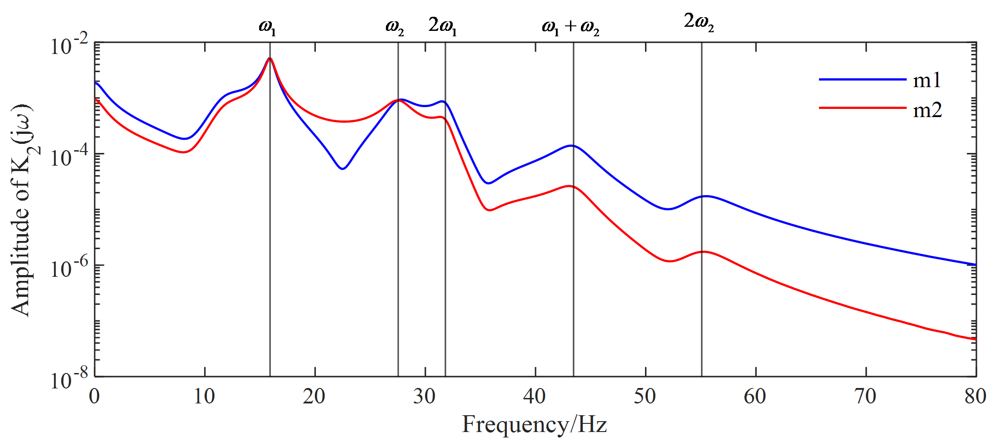
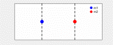
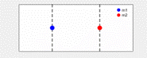
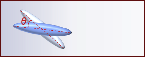
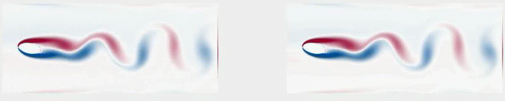
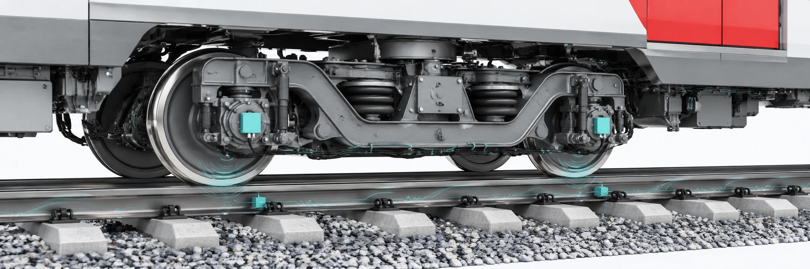

(Nonlinear) Structural Dynamics and Modal Analysis
Understanding linear and nonlinear vibration phenomena, modal interactions, resonance mechanisms, and dynamic behaviour of complex engineering structures.
Research



Understanding linear and nonlinear vibration phenomena, modal interactions, resonance mechanisms, and dynamic behaviour of complex engineering structures.


Combining physical principles and machine learning for system identification, model discovery, state estimation, and predictive modelling of dynamical systems.
Developing thermal-wave imaging, virtual-wave reconstruction, and advanced thermographic signal processing for defect detection and material characterization.
Virtual-wave reconstruction maps diffusive temperature responses into a wave-like field for depth-resolved defect localization.
Advancing non-contact vibration measurement through computer vision, motion magnification, and full-field dynamic reconstruction.

Combining onboard axle-box acceleration measurements, time-frequency analysis, and coupled vehicle-track models to assess ballasted railway tracks and bridge transition zones.
Our work investigates track geometry and support-stiffness variations, including their joint estimation using dual Kalman filtering and model updating, to support railway infrastructure condition assessment.